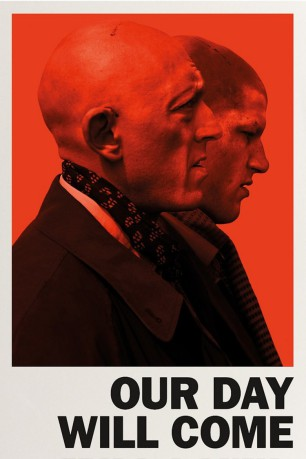
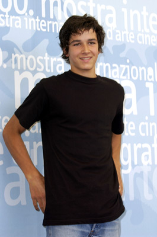
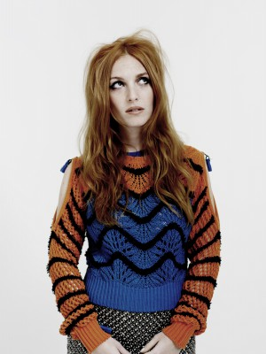

#5105 Our Day Will Come
 
 IMDB-Wertung: 6.2 / 10
IMDB-Wertung: 6.2 / 10  Metascore: 0
Metascore: 0 
Remy (Olivier Barthelemy) hat es nicht leicht: Der rothaarige Teenager ist ein Loser wie er im Buche steht. Der schüchterne Junge hat keine Freunde und wird in der Schule regelmäßig zum Opfer der Schulhof-Bullies. Auch zu Hause hat er ständig Ärger mit seiner Mutter, was ihn zusätzlich frustriert. Er trifft auf den Psychotherapeuten Patrick (Vincent Cassel), der ihn unter seine Fittiche nimmt. Auch Patrick ist ein Versager. Er ist unzufrieden mit seinem Job, weil er unlängst realisiert hat, dass er nicht allen seinen Patienten helfen kann. Mit Remy will er jetzt eine ganz neue Art der Therapie ausprobieren. Er manipuliert und formt seinen Schützling nicht nur nach seinen Wünschen, sondern beschließt auch, mit ihm einen Trip nach Irland zu machen, dem Mutterland der Rotschöpfe. Doch die Reise von Frankreich nach Irland entpuppt sich schnell als eine brutale Tour, die in einem Amoklauf aus Hass, Gewalt und Selbstzerstörung gipfelt.
Jahr: 2010
Dauer: 83 Minuten
FSK: 16
Land: Frankreich Studio: UFATonspuren:
Untertitel:
Auflösung: 1080p (1920x824) Größe: 4096 MB
Genre: Drama
Regisseur: Romain Gavras
Drehbuch: Yann Brion
Soundtrack:
Darsteller:
 Vincent Cassel als Patrick
Vincent Cassel als Patrick-  Pierre Boulanger als Le réceptionniste
-  Joséphine de La Baume als Fille anglaise #2
- Olivier Barthelemy als Rémy
- Justine Lerooy als Natacha
- Vanessa Decat als Vaness
- Boris Gamthety als Serge
- Rodolphe Blanchet als Joël
- Chloé Catoen als La petite fille rousse
- Sylvain Le Mynez als L'otage
- Mathilde Braure als La mère de Rémy
- Thomas Pinczak als Gros
 Jacques Herlin als Hervé Clavel
Jacques Herlin als Hervé Clavel- Camille Rowe als Fille anglaise #1
- Jérémy Bienvenu als Jeune rappeur 1
- Alexandra Dahlström als Fille anglaise #3
- Johnny Descamps als Jeune rappeur 2
- Eric Paul als Entraîneur
- Jérôme Delattre als Supporter 1
- Julien Marienne als Supporter 2
- Anne Gaelle Ponche als Michelle
- Antoine Laurent als Stéphane
- Ladj Ly als Jeune noir tchat vidéo
- Maëva Toualbia als Mignonette gothique
- Kim Chapiron als Jeune gothique
- Elodie Royer als Fille gothique
- Jérôme Mazure als Gaëlle
- Alexandre Sengier als Une caillera
- Abdelmalek Oudjail als Arabe 1
- Tarubi als Arabe 3
- Thérèse Deheunynck als Patronne café
- Cyrus Atory als Vendeur voitures
- Vincent Pietton als Le concessionnaire
- Nicolas Dhont als Le jeune roux
- Clément Landrieu als Barnabé
- Bénédicte Loyen als Mme Clavel
- Franck Deheunynck als Homme mariage 1
- Laurent Monchet als Homme mariage 2
- Aurore Broutin als La mariée
- Philippe Shakeshaft als Le pêcheur roux
- Claudine Vigreux als La pharmacienne
- Julie Vergult als Léa
Datei: X:\2010(N-Z)\Our Day Will Come (2010, FSK16, 1920x824).mkv seit 23.12.2016
Festplatte: HD 2010(G-Z)-2011(A-F)
 Es gibt insgesamt 115 Filme in der Gruppe '2010(N-Z)'
Es gibt insgesamt 115 Filme in der Gruppe '2010(N-Z)'